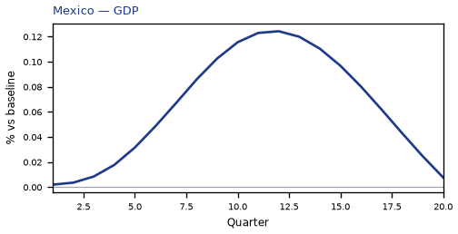
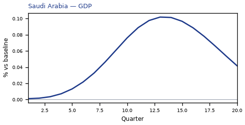
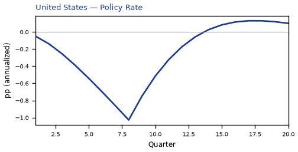

Global Macro Economic Simulations and Financial Market Responses
v6 · IRF · evaluation
What's the impact of US policy rate -200bp
Active treatment
{
"monetary": {
"US": -200.0
}
}Assumptions
- Every path is a model impulse response versus baseline, not a forecast.
- The solver and weights are not included.
- English never enters the solver.
Summary
This report traces the model-implied response to a 200 basis-point (2.00 percentage-point) cut in United States interest rates. Every path shown is an impulse response — a deviation from an estimated baseline — not a forecast, and the numbers should be read as conditional model output rather than predictions of what will happen.
The United States is the origin of the shock and the dominant response. GDP rises to a peak of 0.47% above baseline by Q11, as cheaper domestic funding works through consumption, investment, and credit-sensitive demand. The price response is modest and slow: CPI sits 0.23 percentage points above baseline over three years, consistent with a policy easing that lifts activity faster than it lifts inflation. Equities gain the most of any economy here, peaking 1.61% above baseline, with the discount-rate channel doing most of the work and the growth channel reinforcing it.
The spillovers are real but an order of magnitude smaller, and they do not share the home economy's sign pattern. Mexico's GDP peaks at 0.12% above baseline in Q12, roughly a quarter of the US move, reflecting tight trade and financial linkage to US demand; its CPI instead falls 0.25 percentage points over three years, so the activity gain arrives with disinflation rather than the mild inflation seen at home. Saudi Arabia peaks at 0.10% in Q13 with CPI 0.15 percentage points higher, a smaller and later real response but a price response that runs in the same direction as the US. Canada peaks at 0.10% in Q12, close to Mexico and Saudi Arabia in magnitude, but its CPI falls 0.29 percentage points — the largest disinflation among these economies — and its equity gain of 0.38% is well short of the US. Argentina and Colombia round out the group at 0.05% each, with Argentina's equity response of 0.49% proportionally large relative to its GDP move and Colombia's CPI easing 0.09 percentage points.
The remaining countries in the sample register smaller spillovers still, and each is covered in its own chapter that follows.
This material is model output, not financial advice.
Each country is its own page so the file opens in the Hub. Download this folder and open index.html locally to read it as one document.
Countries by GDP impact
- US — United States · GDP +0.47% Q11 · JSON
- MX — Mexico · GDP +0.12% Q12 · JSON
- SA — Saudi Arabia · GDP +0.10% Q13 · JSON
- CA — Canada · GDP +0.10% Q12 · JSON
- AR — Argentina · GDP +0.05% Q9 · JSON
- CO — Colombia · GDP +0.05% Q11 · JSON
- CL — Chile · GDP +0.05% Q11 · JSON
- BR — Brazil · GDP +0.05% Q11 · JSON
- MY — Malaysia · GDP +0.04% Q11 · JSON
- TR — Turkey · GDP +0.03% Q9 · JSON
- KR — South Korea · GDP +0.03% Q11 · JSON
- NG — Nigeria · GDP +0.03% Q10 · JSON
- ZA — South Africa · GDP +0.03% Q11 · JSON
- NL — Netherlands · GDP +0.03% Q11 · JSON
- TH — Thailand · GDP +0.03% Q10 · JSON
- IN — India · GDP +0.02% Q9 · JSON
- NO — Norway · GDP +0.02% Q11 · JSON
- ID — Indonesia · GDP +0.02% Q10 · JSON
- CH — Switzerland · GDP +0.02% Q11 · JSON
- RU — Russia · GDP +0.02% Q10 · JSON
- AU — Australia · GDP +0.02% Q11 · JSON
- PL — Poland · GDP +0.01% Q10 · JSON
- UK — United Kingdom · GDP +0.01% Q10 · JSON
- SE — Sweden · GDP +0.01% Q10 · JSON
- CN — China · GDP +0.01% Q9 · JSON
- DE — Germany · GDP +0.01% Q10 · JSON
- ES — Spain · GDP +0.01% Q9 · JSON
- FR — France · GDP +0.01% Q9 · JSON
- JP — Japan · GDP +0.01% Q9 · JSON
- IT — Italy · GDP +0.01% Q9 · JSON






source=live · 15600 numbers · irf · not financial advice